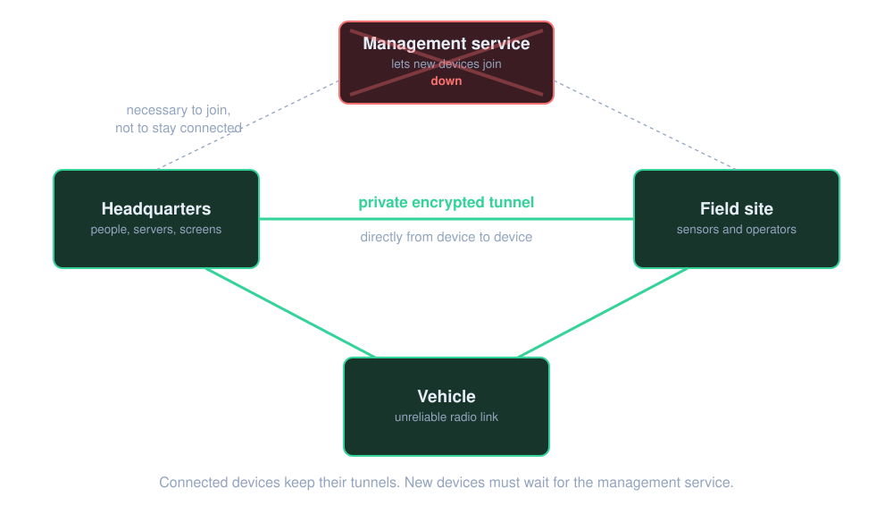
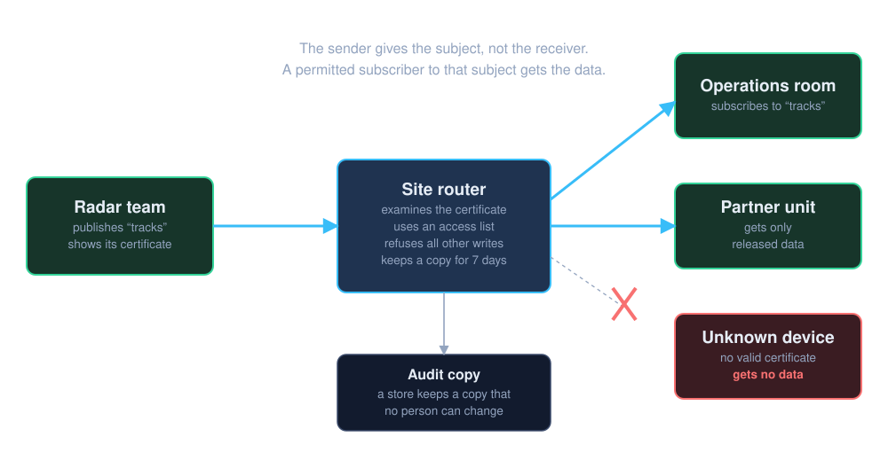
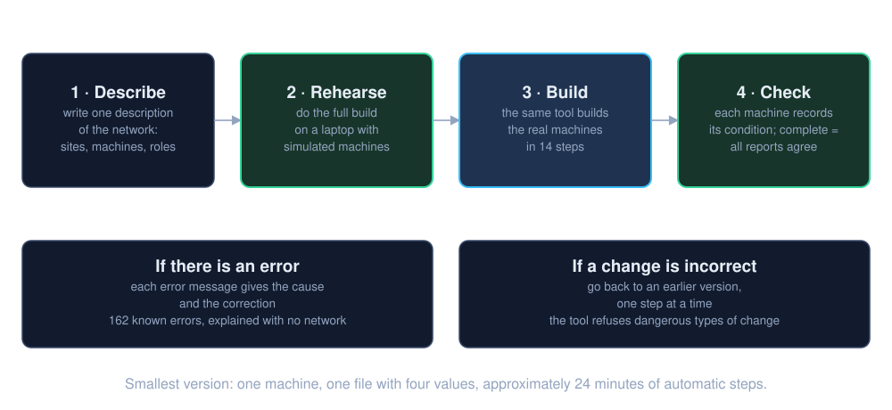
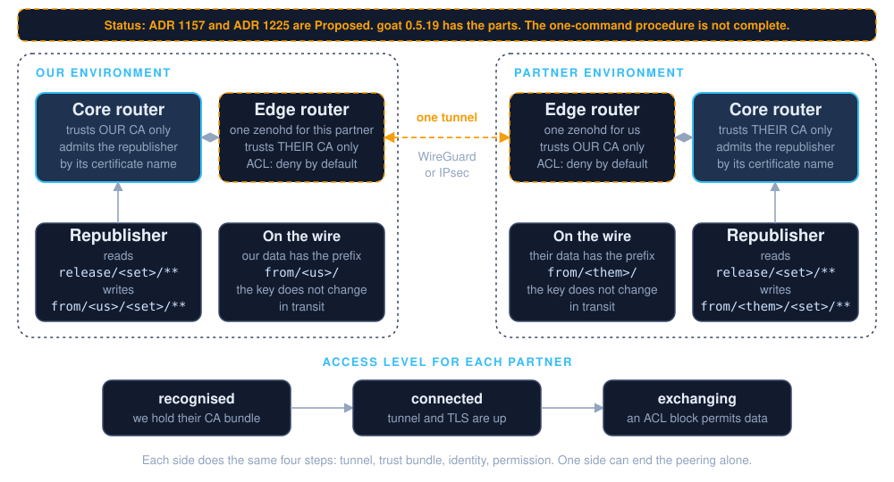
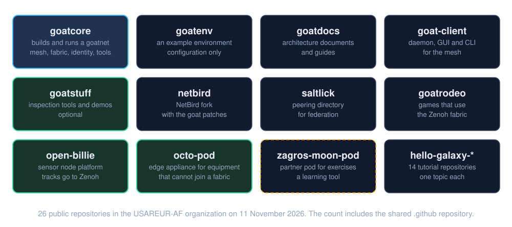

The problem
Most data systems need a reliable link to a central service. goat is for places where that link is not reliable.
Links fail
Field sites, vehicles and partner units have unreliable links. If you cannot connect to a cloud service, you cannot use it.
The center is a target
One central server is one point of failure. It is also one target on the internet.
Location is not trust
You cannot trust a device only because it is inside the building. People, machines and partners are at many sites.
The goat answer has two parts. Each site can operate alone. Access depends on your identity, not on your location.
The primary promise

- Devices connect through private encrypted tunnels. The traffic goes directly from device to device.
- A central management service lets new devices join.
- If the management service stops, the tunnels of connected devices stay up.
The parts
goat is not one new invention. It connects four known open-source projects and operates them as one system.
Tunnels
Encrypted tunnels between devices. Relays help devices that cannot connect directly.
WireGuard, with NetBird as the managerData service with no central broker
A sender gives each message a subject. A receiver asks for a subject and gets those messages.
Eclipse ZenohIdentity
Different credentials for people, software and machines. An offline certificate authority signs the certificates.
Ory, SPIFFE, an offline certificate authoritySite records
Each site has a full copy of the enrolment data and the login data. The sites keep their copies the same.
PostgreSQL with Spock replicationgoat adds two tools of its own. goatbuilder builds a network. goat operates a network.
Data sharing

- Publish and subscribe. A radar team publishes "tracks". The team does not need a list of receivers.
- The router examines the certificate. Each site has a data router. A sender can write only below its own name. The router refuses all other writes.
- Partners get less. A partner gets only the data that the owner released to it.
- There is an audit copy. An audit store keeps a copy of the messages. No person can change that copy for 30 days.
How to build a network

- Write the description of the network.
- Do a rehearsal on a laptop. The rehearsal uses simulated machines, uses no network, and takes seconds.
- Build the real network with the same tool. The build has 14 steps.
- Read the reports. A build is complete only when the report from each machine agrees with the plan. If a machine gives no report, its status is "unknown", not "OK".
The smallest version is goatlite. It uses one machine and one file with four values. Its automatic steps took approximately 24 minutes on a new machine. The project says that goatlite is "never for production". It is for learning.
Federation: two nations connect their networks

- Each nation keeps its own network. Each side has its own certificate authority. One side does not join the network of the other side.
- One edge router for each partner. The edge router trusts only the certificate authority of that partner.
- Only released data crosses. The owner puts data in a release set. A small program copies that data to a name with the prefix
from/<owner>/. The prefix shows the origin. - One side can stop the connection alone. It does not need the other side.
goatbuilder federate) are now in the code. The full procedure is not complete.Maturity
The project gives each part a status word: built, measured, designed or not built. This table uses those words.
| Part | Status | What the repository says |
|---|---|---|
| Direct tunnels, relays, one data router for each site | Built, measured | In operation on the example network of the project |
| Network on one machine | Built | Works from start to end on new machines; "never for production" |
| Build tool and rehearsal | Built | A full build in one hour is "a target, not a claim" |
| Machines get their own updates | Designed | Today an operator pushes the changes |
| Federation with a different environment | Built in part | Run one time between two administrations, with many manual steps. The one-command procedure is not complete. |
| Administration changes at a site with no connection | Designed | Today one site makes these changes |
| Size | Approximately 100 devices tested | The target is 600 to 6,000 |
The repository family

| Repository | Function |
|---|---|
goatcore | Builds and operates a network. This page is about goatcore. |
goatstuff | Optional inspection tools, health publishers and demonstrations. You do not need it to operate a network. |
goatenv, goatdocs, goat-client, netbird | An example environment, the documents, the client for the mesh, and the NetBird fork with the goat patches. |
open-billie | A sensor node platform. It publishes tracks to the Zenoh data service. |
octo-pod | An edge appliance for equipment that cannot join a network. |
zagros-moon-pod | A partner starts one data router and connects to a sandbox network. The project says that it is a learning tool for exercises. It is not the operational path between nations. That path is federation. |
saltlick, goatrodeo, hello-galaxy-* | A peering directory for federation, games that use the data service, and 14 tutorials. |
The project, and what you supply
Free to use
Written by U.S. federal employees. Public domain in the United States. Apache 2.0 license in other countries.
On your own machines
You supply the computers, a secret store and your configuration. You do not need a vendor cloud. To connect sites through the internet, you need cloud relays.
Strict checks
138 check scripts examine the changes. Each public repository has a contributor check on each pull request. No person can bypass the checks on the main branch.
goat is before version 1.0. Interfaces can change between releases.
What to remember
Glossary
- goatnet
- One network that you build with goat: its sites, machines and members.
- Site
- A location with its own core machines and its own full copy of the important records.
- Relay
- A server on the internet that passes traffic between two devices that cannot connect directly. It cannot read the traffic.
- Publish and subscribe
- A sender gives data a subject. A receiver asks for a subject. They do not need the address of each other.
- Data router
- The program at each site that examines identity, passes data, and keeps a short history.
- Certificate
- A digital identity document. goat examines it before it accepts a write.
- Federation
- A controlled connection between two independent goat environments.
- Release set
- A named group of data that an owner agrees to share with a partner.